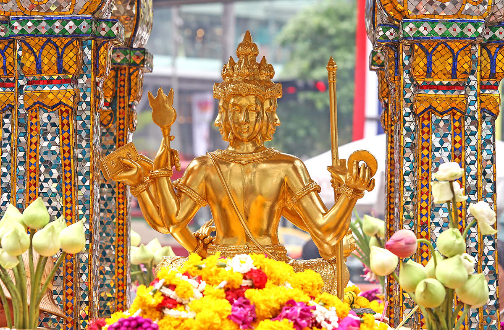

9 ศาลท้าวมหาพรหม โรงแรมเอราวัณ
ศาลท้าวมหาพรหม โรงแรมเอราวัณ สร้างขึ้นในปีพ.ศ. 2499 เนื่องจากการก่อสร้างโรงแรมเกิดอุบัติบ่อยครั้ง จึงต้องมีการขอพรจากพระพรหมและสร้างศาลพระพรหมขึ้น โดยมีการกำหนดว่า เมื่อโรงแรมสร้างเสร็จแลล้ว ควรสร้างศาลใกล้กับสถานที่ก่อสร้างโรงแรมเพื่ออุทิศแด่พระพรหม ปัจจุบัน ศาลท้าวมหาพรหม โรงแรมเอราวัณ เป็นศาลเจ้าที่มีผู้มาเยี่ยมเยือนบ่อยที่สุดแห่งหนึ่งใน กรุงเทพ และเป็นหนึ่งในศาลที่คนเคารพนับถือมากที่สุดและนิยมมาบนบานขอพร โดยทุกๆ วันจะมีการรำแก้บนให้เห็นเป็นประจำ